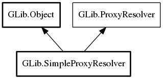

SimpleProxyResolver
Object Hierarchy:
Description:
SimpleProxyResolver is a simple ProxyResolver implementation that handles a single default proxy, multiple URI-scheme-specific proxies, and a list of hosts that proxies should not be used for.
SimpleProxyResolver is never the default proxy resolver, but it can be used as the base class for another proxy resolver implementation, or it can be created and used manually, such as with set_proxy_resolver.
Namespace: GLib
Package: gio-2.0
Content:
Properties:
Static methods:
Creation methods:
Methods:
Inherited Members:
All known members inherited from class GLib.Object

All known members inherited from interface GLib.ProxyResolver